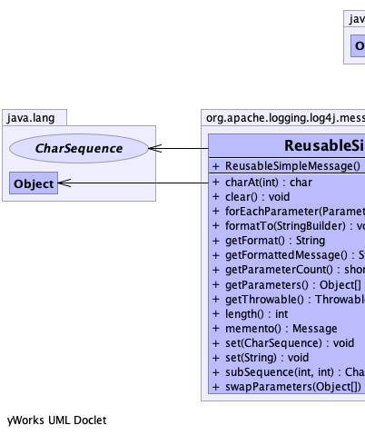
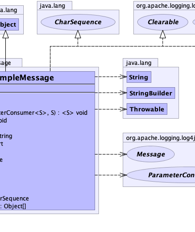
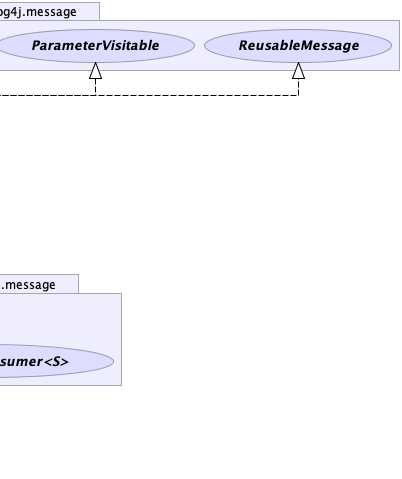

public class ReusableSimpleMessage extends java.lang.Object implements ReusableMessage, java.lang.CharSequence, ParameterVisitable
|  |  |  |
| Constructor and Description |
|---|
ReusableSimpleMessage() |
| Modifier and Type | Method and Description |
|---|---|
char |
charAt(int index) |
void |
clear()
Resets the object to a clean state.
|
<S> void |
forEachParameter(ParameterConsumer<S> action,
S state)
Performs the given action for each parameter until all values
have been processed or the action throws an exception.
|
void |
formatTo(java.lang.StringBuilder buffer)
Writes a text representation of this object into the specified
StringBuilder, ideally without allocating
temporary objects. |
java.lang.String |
getFormat()
Gets the format portion of the Message.
|
java.lang.String |
getFormattedMessage()
Gets the Message formatted as a String.
|
short |
getParameterCount()
This message does not have any parameters so this method always returns zero.
|
java.lang.Object[] |
getParameters()
Gets parameter values, if any.
|
java.lang.Throwable |
getThrowable()
Gets the throwable, if any.
|
int |
length() |
Message |
memento()
Returns an immutable snapshot of the current internal state of this reusable message.
|
void |
set(java.lang.CharSequence charSequence) |
void |
set(java.lang.String message) |
java.lang.CharSequence |
subSequence(int start,
int end) |
java.lang.Object[] |
swapParameters(java.lang.Object[] emptyReplacement)
This message does not have any parameters, so this method returns the specified array.
|
public void set(java.lang.String message)
public void set(java.lang.CharSequence charSequence)
public java.lang.String getFormattedMessage()
Message
When configured to log asynchronously, this method is called before the Message is queued, unless this
message implements ReusableMessage or is annotated with AsynchronouslyFormattable.
This gives the Message implementation class a chance to create a formatted message String with the current value
of any mutable objects.
The intention is that the Message implementation caches this formatted message and returns it on subsequent
calls. (See LOG4J2-763.)
When logging synchronously, this method will not be called for Messages that implement the
StringBuilderFormattable interface: instead, the
formatTo(StringBuilder) method will be called so the
Message can format its contents without creating intermediate String objects.
getFormattedMessage in interface Messagepublic java.lang.String getFormat()
MessagegetFormat in interface Messagepublic java.lang.Object[] getParameters()
MessagegetParameters in interface Messagepublic java.lang.Throwable getThrowable()
MessagegetThrowable in interface Messagepublic void formatTo(java.lang.StringBuilder buffer)
StringBuilderFormattableStringBuilder, ideally without allocating
temporary objects.formatTo in interface StringBuilderFormattablebuffer - the StringBuilder to write intopublic java.lang.Object[] swapParameters(java.lang.Object[] emptyReplacement)
swapParameters in interface ReusableMessageemptyReplacement - the parameter array to returnReusableMessage.getParameterCount()public short getParameterCount()
getParameterCount in interface ReusableMessagepublic <S> void forEachParameter(ParameterConsumer<S> action, S state)
ParameterVisitableThe second parameter lets callers pass in a stateful object to be modified with the key-value pairs, so the TriConsumer implementation itself can be stateless and potentially reusable.
forEachParameter in interface ParameterVisitableS - type of the third parameteraction - The action to be performed for each key-value pair in this collectionstate - the object to be passed as the third parameter to each invocation on the
specified ParameterConsumer.public Message memento()
ReusableMessagememento in interface ReusableMessagepublic int length()
length in interface java.lang.CharSequencepublic char charAt(int index)
charAt in interface java.lang.CharSequencepublic java.lang.CharSequence subSequence(int start,
int end)
subSequence in interface java.lang.CharSequencepublic void clear()